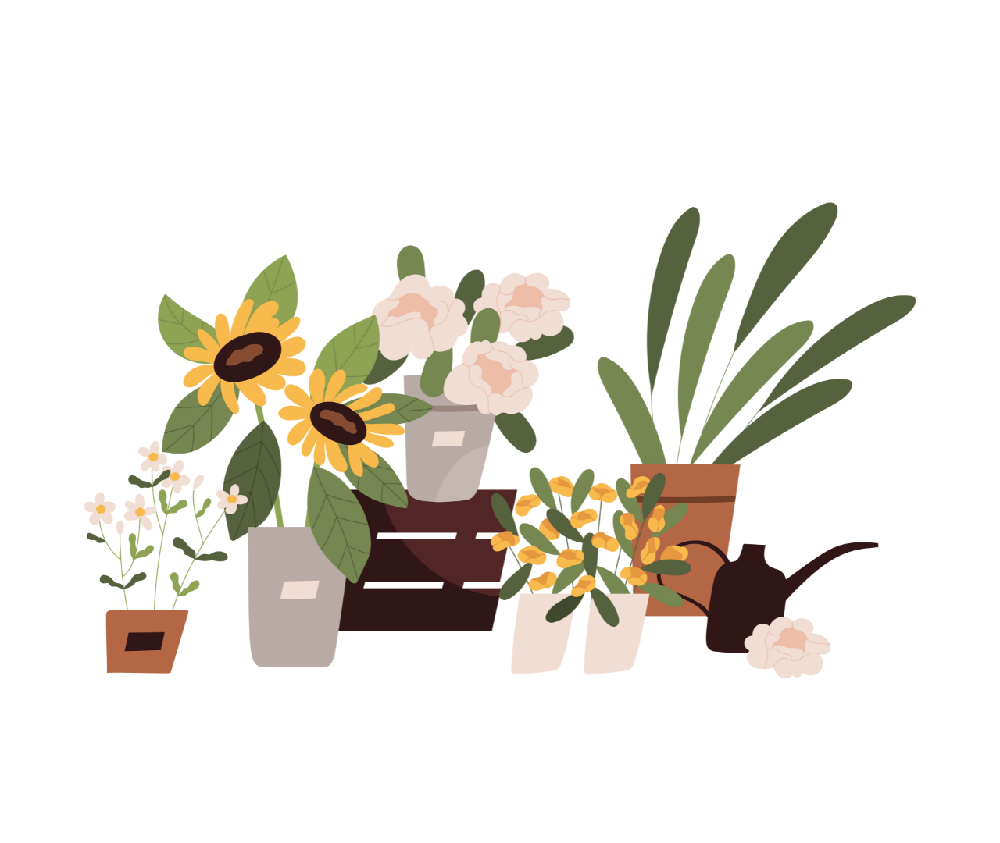

What are
Photoperiod plants?
“Photoperiodism is the response to changes in daylength that enables plants to adapt to seasonal changes in their environment. The best studied example of photoperiodism in plants is flowering, but other responses to daylength include
bud dormancy and bulb or tuber initiation.”

Plant In Context
:max_bytes(150000):strip_icc():format(webp)/growing-and-caring-for-dahlias-1402255-03-306dc2f2b09849189998f1bbe86b2a44.jpg)
:max_bytes(150000):strip_icc():format(webp)/fall-garden-mums-hardy-or-no-1402718-04-bbc5a2186d8640e2b4b5bc4036b892bc.jpg)
:max_bytes(150000):strip_icc():format(webp)/africaniris-40fd8db6e369436989a121edf6daf0c1.jpg)
:max_bytes(150000):strip_icc()/how-to-grow-morning-glories-4125567-01-4a87ac9a046945bf85c69b5fc85a4b2e.jpg)
:max_bytes(150000):strip_icc():format(webp)/jane-magnolia-to-brighten-spring-yard-2132129-08-9428a1ce801f4d57b7afb666cc0e831c.jpg)
:max_bytes(150000):strip_icc():format(webp)/kwanzan-cherry-trees-2132134-01-c71b6c8d24d94546921dac24c074472d.jpg)
:max_bytes(150000):strip_icc():format(webp)/how-to-grow-cornflowers-4125569-08-a6cffa0ed9e6420092d546b118db385f.jpg)
:max_bytes(150000):strip_icc():format(webp)/camellia-flowers-1316021-8-047500c26b81426c9633f086623894df.jpg)

:max_bytes(150000):strip_icc():format(webp)/growing-and-using-calendula-1402626-hero-6c4c4cf97a8940aaabad6975a27358b1-975ec0f7f1144eef8553df0111e7136f.jpg)
:max_bytes(150000):strip_icc():format(webp)/how-to-grow-and-care-for-angelonia-4687127-01-3c1609aca1094e0ebc4943c8b851248e.jpg)
:max_bytes(150000):strip_icc():format(webp)/winterberry-holly-shrubs-2131220-01-728146e428f0475892408256a573ea1f.jpg)
:max_bytes(150000):strip_icc():format(webp)/arabian-jasmine-guide-5190635-hero-5442f623297e44968f580f1af52bd075.jpg)
:max_bytes(150000):strip_icc():format(webp)/growing-sunflowers-1402916-02-5c7133a770c8407887fa6b23e6e68f17.jpg)
:max_bytes(150000):strip_icc():format(webp)/KaraRiley-10-5e6371888b8a43eb9973aa8ed5cad44f.jpg)
:max_bytes(150000):strip_icc():format(webp)/how-to-grow-true-perennial-geraniums-1402842-05-12fbf980bc9a474f87f2bea985206b60.jpg)
:max_bytes(150000):strip_icc():format(webp)/fuchsia-great-container-plant-for-shade-847937-8-5c893795c45b4e69b0bc4669cf068fd6.jpg)
:max_bytes(150000):strip_icc():format(webp)/caring-for-easter-lilies-1403159-2-64ccf52cb94e4bc1b1e9ae0dad1af18f.jpg)
:max_bytes(150000):strip_icc():format(webp)/SPR-orange-tree-growing-guide-6541613-hero-6841f606ede14bad93f1522b74c602e6.JPG)
:max_bytes(150000):strip_icc():format(webp)/poinsettias-keepers-or-compost-1403587-03-02f48f12b35847a08eb669652c17ef01.jpg)
:max_bytes(150000):strip_icc():format(webp)/growing-mint-1402628-closeup-d55f829e9b4d487d942a2edec4343eab.jpg)
:max_bytes(150000):strip_icc():format(webp)/growing-pilea-peperomioides-5090425-5-64b7b494b8044485bf13cd2978614b14.jpg)
:max_bytes(150000):strip_icc():format(webp)/sweet-woodruff-plants-2132332-hero-a3ea0a63e713475db17525c3410d54b8.JPG)
:max_bytes(150000):strip_icc():format(webp)/how-to-care-for-azaleas-5074145-06-d004727782d94545936f4d7352ced9f3.jpg)